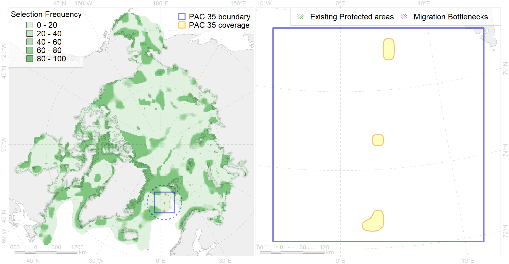

Region 35
Region 35
“ArcNet” scenario 33 achievement for region 35.
Use Accenter for advanced mode.

0
CFs inside of Region completely
1
CFs inside of Region at quarter
0
Complete-targets achievement by Region
0
Half-targets achievement by Region
| CF | Name | Target Achievement for Region | Proportion of Target Achievement in Region | Amount Proportion in Region |
|---|---|---|---|---|
| 7189 | VI.1.8. Seamounts | 28.8% | 28.7% | 28.2% |
| 7174 | VII.1.4. Abyssal mountains | 11.2% | 5.7% | 2.7% |
| 7186 | VI.1.3. Ridges | 5.5% | 5.2% | 2.4% |
| 7187 | VI.1.4. Spreading ridge | 7.7% | 4.4% | 2.0% |
| 5064 | Killer whale summer feeding areas in the North East Atlantic | 20.2% | 3.4% | 1.2% |
| 7027 | Greenland Sea abyssal region | 6.9% | 6.9% | 1.1% |
| 7173 | VII.1.3. Abyssal hills | 3.3% | 1.1% | 0.5% |
| 5051 | Fin whale summer feeding areas in Norway | 1.2% | 0.9% | 0.3% |
| 6004 | Little Auk (Alle alle polaris) wintering grounds | 1.5% | 0.8% | 0.3% |
| 5046 | Bowhead whale of the Spitsbergen population home range | 1.3% | 1.3% | 0.3% |
| 5067 | Minke whale feeding areas in the Northeast Atlantic | 1.7% | 0.5% | 0.2% |
| 4027 | Feeding/migration area of the Atlantic salmon (Salmo salar) American populations (F27) | 0.8% | 0.5% | 0.2% |
| 6002 | Little Auk (Alle alle alle) winetring grounds | 0.6% | 0.4% | 0.1% |
| 4096 | Range of the Glacial eelpout (Lycodes frigidus) | 1.7% | 0.4% | 0.1% |
| 6023 | Atlantic puffin (Fratercula arctica naumanni) wintering grounds | 0.4% | 0.3% | 0.1% |
| 4079 | Fish zoogeography, Arctic Region, Arctic Abyssal Province (11A -Scandian, 11B - Central-Arctic and 11C - Baffin Deep-sea Districts ) | 2.4% | 0.4% | 0.1% |
| 4045 | Feeding/migration area of the Pink Salmon (Oncorhynchus gorbuscha), native distribution (F23) | 1.3% | 0.2% | 0.1% |
| 6083 | Thick-billed murre (Uria lomvia lomvia) wintering grounds | 0.2% | 0.1% | 0.0% |
| 4041 | Range of the Polar Cod (Boreogadus saida) (F35) | 0.3% | 0.1% | 0.0% |
| 4037 | Distribution of the Glacial cod (Arctogadus glacialis) (F34) | 0.2% | 0.1% | 0.0% |
| 9003 | polar bear of the BS (Barents Sea) subpopulation distribution | 0.0% | 0.0% | 0.0% |